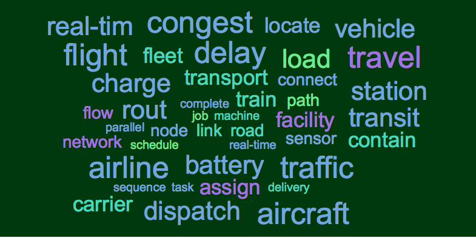

<!DOCTYPE HTML>
<html>
    <head>
        <meta http-equiv="Content-Type" content="text/html; charset=UTF-8" />
        <style>
	body {
		background-color: #dddddd;
	}
.topic {
  margin: 10px;
  padding: 10px;
	font-family: "Lucida Grande";
	background-color: #ffffff;
}
.clearing {
  clear: both;
}
</style>
    
</head>
<body>

<map name="planetmap">
  <area shape="rect" coords="0,0,100,80" href="webdesign/speaker_comm_subpage/scomm1.html" alt="Comm0">
  <area shape="rect" coords="0,80,100,160" href="webdesign/speaker_comm_subpage/scomm2.html" alt="Comm1">
    <area shape="rect" coords="0,160,100,240" href="webdesign/speaker_comm_subpage/scomm3.html" alt="Comm2">
    <area shape="rect" coords="0,240,100,320" href="webdesign/speaker_comm_subpage/scomm4.html" alt="Comm3">
    <area shape="rect" coords="0,320,100,400" href="webdesign/speaker_comm_subpage/scomm5.html" alt="Comm4">
    <area shape="rect" coords="440,0,650,80" href="webdesign/talk_comm_subpage/ncomm1.html" alt="Comm0">
  <area shape="rect" coords="440,80,650,160" href="webdesign/talk_comm_subpage/ncomm2.html" alt="Comm1">
    <area shape="rect" coords="440,160,650,240" href="webdesign/talk_comm_subpage/ncomm3.html" alt="Comm2">
    <area shape="rect" coords="440,240,650,320" href="webdesign/talk_comm_subpage/ncomm4.html" alt="Comm3">
    <area shape="rect" coords="440,320,650,400" href="webdesign/talk_comm_subpage/ncomm5.html" alt="Comm4">
</map>
</body>
<body>
<h1>INFORMS Data Abstract Document Cluster Result</h1>

<div class='topic'>
<div><A HREF="ncomm1.html">Cluster 1</A></div>

<table style="width:600px;float:left"><tr><td><a href="file:///Users/yujialiu/Desktop/research/webdesign/speaker_info/comm10.html" onclick="javascript:void window.open("'file:///Users/yujialiu/Desktop/research/webdesign/speaker_info/comm10.html'",'1408393674039','width=700,height=500,toolbar=0,menubar=0,location=0,status=1,scrollbars=1,resizable=1,left=0,top=0');return false;">Purchase Behavior and Psychophysiological Responses to Different Price Levels
</td></tr><tr><td><a href="file:///Users/yujialiu/Desktop/research/webdesign/speaker_info/comm11.html" onclick="javascript:void window.open("'file:///Users/yujialiu/Desktop/research/webdesign/speaker_info/comm11.html'",'1408393674039','width=700,height=500,toolbar=0,menubar=0,location=0,status=1,scrollbars=1,resizable=1,left=0,top=0');return false;">Supply Chain Contracting with Limited Demand Information
</td></tr><tr><td><a href="file:///Users/yujialiu/Desktop/research/webdesign/speaker_info/comm12.html" onclick="javascript:void window.open("'file:///Users/yujialiu/Desktop/research/webdesign/speaker_info/comm12.html'",'1408393674039','width=700,height=500,toolbar=0,menubar=0,location=0,status=1,scrollbars=1,resizable=1,left=0,top=0');return false;">Music for a Song: An Empirical Look at Uniform Song Pricing and its Alternatives
</td></tr><tr><td><a href="file:///Users/yujialiu/Desktop/research/webdesign/speaker_info/comm13.html" onclick="javascript:void window.open("'file:///Users/yujialiu/Desktop/research/webdesign/speaker_info/comm13.html'",'1408393674039','width=700,height=500,toolbar=0,menubar=0,location=0,status=1,scrollbars=1,resizable=1,left=0,top=0');return false;">Noncooperative Scheduling Games with Auctions
</td></tr><tr><td><a href="file:///Users/yujialiu/Desktop/research/webdesign/speaker_info/comm14.html" onclick="javascript:void window.open("'file:///Users/yujialiu/Desktop/research/webdesign/speaker_info/comm14.html'",'1408393674039','width=700,height=500,toolbar=0,menubar=0,location=0,status=1,scrollbars=1,resizable=1,left=0,top=0');return false;">The Effect of Near Miss Events on Intertemporal Choice Behavior
</td></tr></table>
<div class='clearing'></div></div>
<div class='topic'>

<div><A HREF="ncomm2.html">Cluster 2</A></div>
<table style="width:600px;float:left"><tr><td><a href="file:///Users/yujialiu/Desktop/research/webdesign/speaker_info/comm20.html" onclick="javascript:void window.open("'file:///Users/yujialiu/Desktop/research/webdesign/speaker_info/comm20.html'",'1408393674039','width=700,height=500,toolbar=0,menubar=0,location=0,status=1,scrollbars=1,resizable=1,left=0,top=0');return false;">SAS Global Academic Program - High-Performance Data Mining with SAS Enterprise Miner
</td></tr><tr><td><a href="file:///Users/yujialiu/Desktop/research/webdesign/speaker_info/comm21.html" onclick="javascript:void window.open("'file:///Users/yujialiu/Desktop/research/webdesign/speaker_info/comm21.html'",'1408393674039','width=700,height=500,toolbar=0,menubar=0,location=0,status=1,scrollbars=1,resizable=1,left=0,top=0');return false;">Dynamic Ensemble Prediction with a Classifier-based Distance Metric
</td></tr><tr><td><a href="file:///Users/yujialiu/Desktop/research/webdesign/speaker_info/comm22.html" onclick="javascript:void window.open("'file:///Users/yujialiu/Desktop/research/webdesign/speaker_info/comm22.html'",'1408393674039','width=700,height=500,toolbar=0,menubar=0,location=0,status=1,scrollbars=1,resizable=1,left=0,top=0');return false;">Stochastic Kriging for Simulation Metamodeling
</td></tr><tr><td><a href="file:///Users/yujialiu/Desktop/research/webdesign/speaker_info/comm23.html" onclick="javascript:void window.open("'file:///Users/yujialiu/Desktop/research/webdesign/speaker_info/comm23.html'",'1408393674039','width=700,height=500,toolbar=0,menubar=0,location=0,status=1,scrollbars=1,resizable=1,left=0,top=0');return false;">GAMS Branch-and-Cut & Heuristic Facility
</td></tr><tr><td><a href="file:///Users/yujialiu/Desktop/research/webdesign/speaker_info/comm24.html" onclick="javascript:void window.open("'file:///Users/yujialiu/Desktop/research/webdesign/speaker_info/comm24.html'",'1408393674039','width=700,height=500,toolbar=0,menubar=0,location=0,status=1,scrollbars=1,resizable=1,left=0,top=0');return false;">Tour de MOSEK 7: The Short Version
</td></tr></table><div class='clearing'></div></div>
<div class='clearing'></div></div>
<div class='topic'>

<div><A HREF="ncomm3.html">Cluster 3</A></div><table><tr><td><a href="file:///Users/yujialiu/Desktop/research/webdesign/speaker_info/comm30.html" onclick="javascript:void window.open("'file:///Users/yujialiu/Desktop/research/webdesign/speaker_info/comm30.html'",'1408393674039','width=700,height=500,toolbar=0,menubar=0,location=0,status=1,scrollbars=1,resizable=1,left=0,top=0');return false;">Efficient Simulation for American Option Pricing Under Stochastic Volatility
</td></tr><tr><td><a href="file:///Users/yujialiu/Desktop/research/webdesign/speaker_info/comm31.html" onclick="javascript:void window.open("'file:///Users/yujialiu/Desktop/research/webdesign/speaker_info/comm31.html'",'1408393674039','width=700,height=500,toolbar=0,menubar=0,location=0,status=1,scrollbars=1,resizable=1,left=0,top=0');return false;">Approximate Solutions to Logistical Planning Problems in One-Warehouse Multi-Retailer Systems
</td></tr><tr><td><a href="file:///Users/yujialiu/Desktop/research/webdesign/speaker_info/comm32.html" onclick="javascript:void window.open("'file:///Users/yujialiu/Desktop/research/webdesign/speaker_info/comm32.html'",'1408393674039','width=700,height=500,toolbar=0,menubar=0,location=0,status=1,scrollbars=1,resizable=1,left=0,top=0');return false;">Building Energy Analytics for Operational Energy Efficiency Improvement of Commercial Buildings
</td></tr><tr><td><a href="file:///Users/yujialiu/Desktop/research/webdesign/speaker_info/comm33.html" onclick="javascript:void window.open("'file:///Users/yujialiu/Desktop/research/webdesign/speaker_info/comm33.html'",'1408393674039','width=700,height=500,toolbar=0,menubar=0,location=0,status=1,scrollbars=1,resizable=1,left=0,top=0');return false;">Fighting Market Power by Auctioning Generation: How Much, How Often? A System Dynamics Approach
</td></tr><tr><td><a href="file:///Users/yujialiu/Desktop/research/webdesign/speaker_info/comm34.html" onclick="javascript:void window.open("'file:///Users/yujialiu/Desktop/research/webdesign/speaker_info/comm34.html'",'1408393674039','width=700,height=500,toolbar=0,menubar=0,location=0,status=1,scrollbars=1,resizable=1,left=0,top=0');return false;">Generation Portfolios and Market Power
</td></tr></table><div class='clearing'></div></div>
<div class='clearing'></div></div>
<div class='topic'>

<div><A HREF="ncomm4.html">Cluster 4</A></div><table><tr><td><a href="file:///Users/yujialiu/Desktop/research/webdesign/speaker_info/comm40.html" onclick="javascript:void window.open("'file:///Users/yujialiu/Desktop/research/webdesign/speaker_info/comm40.html'",'1408393674039','width=700,height=500,toolbar=0,menubar=0,location=0,status=1,scrollbars=1,resizable=1,left=0,top=0');return false;">Optimal Admission Control Policies for Two Station Tandem Queues with Loss
</td></tr><tr><td><a href="file:///Users/yujialiu/Desktop/research/webdesign/speaker_info/comm41.html" onclick="javascript:void window.open("'file:///Users/yujialiu/Desktop/research/webdesign/speaker_info/comm41.html'",'1408393674039','width=700,height=500,toolbar=0,menubar=0,location=0,status=1,scrollbars=1,resizable=1,left=0,top=0');return false;">An Integrated Evaluation Platform for Regional Planning Methods for Freight Transportation Systems
</td></tr><tr><td><a href="file:///Users/yujialiu/Desktop/research/webdesign/speaker_info/comm42.html" onclick="javascript:void window.open("'file:///Users/yujialiu/Desktop/research/webdesign/speaker_info/comm42.html'",'1408393674039','width=700,height=500,toolbar=0,menubar=0,location=0,status=1,scrollbars=1,resizable=1,left=0,top=0');return false;">Stochastic Demand Assignment Problems with Facility Capacities
</td></tr><tr><td><a href="file:///Users/yujialiu/Desktop/research/webdesign/speaker_info/comm43.html" onclick="javascript:void window.open("'file:///Users/yujialiu/Desktop/research/webdesign/speaker_info/comm43.html'",'1408393674039','width=700,height=500,toolbar=0,menubar=0,location=0,status=1,scrollbars=1,resizable=1,left=0,top=0');return false;">Weather Normalization for Evaluating National Airspace System (NAS) Performance
</td></tr><tr><td><a href="file:///Users/yujialiu/Desktop/research/webdesign/speaker_info/comm44.html" onclick="javascript:void window.open("'file:///Users/yujialiu/Desktop/research/webdesign/speaker_info/comm44.html'",'1408393674039','width=700,height=500,toolbar=0,menubar=0,location=0,status=1,scrollbars=1,resizable=1,left=0,top=0');return false;">Network Reliability Lower Bound via Petri Nets
</td></tr></table><div class='clearing'></div></div>
<div class='clearing'></div></div>
<div class='topic'>

<div><A HREF="ncomm5.html">Cluster 5</A></div><table><tr><td><a href="file:///Users/yujialiu/Desktop/research/webdesign/speaker_info/comm50.html" onclick="javascript:void window.open("'file:///Users/yujialiu/Desktop/research/webdesign/speaker_info/comm50.html'",'1408393674039','width=700,height=500,toolbar=0,menubar=0,location=0,status=1,scrollbars=1,resizable=1,left=0,top=0');return false;">Bayesian Opinion Pools
</td></tr><tr><td><a href="file:///Users/yujialiu/Desktop/research/webdesign/speaker_info/comm51.html" onclick="javascript:void window.open("'file:///Users/yujialiu/Desktop/research/webdesign/speaker_info/comm51.html'",'1408393674039','width=700,height=500,toolbar=0,menubar=0,location=0,status=1,scrollbars=1,resizable=1,left=0,top=0');return false;">Information-Theoretic Learning for Stimulus-specific Clustering with fMRI
</td></tr><tr><td><a href="file:///Users/yujialiu/Desktop/research/webdesign/speaker_info/comm52.html" onclick="javascript:void window.open("'file:///Users/yujialiu/Desktop/research/webdesign/speaker_info/comm52.html'",'1408393674039','width=700,height=500,toolbar=0,menubar=0,location=0,status=1,scrollbars=1,resizable=1,left=0,top=0');return false;">Optimizing Colorectal Cancer Screening Policy
</td></tr><tr><td><a href="file:///Users/yujialiu/Desktop/research/webdesign/speaker_info/comm53.html" onclick="javascript:void window.open("'file:///Users/yujialiu/Desktop/research/webdesign/speaker_info/comm53.html'",'1408393674039','width=700,height=500,toolbar=0,menubar=0,location=0,status=1,scrollbars=1,resizable=1,left=0,top=0');return false;">The Future of New Product Development
</td></tr><tr><td><a href="file:///Users/yujialiu/Desktop/research/webdesign/speaker_info/comm54.html" onclick="javascript:void window.open("'file:///Users/yujialiu/Desktop/research/webdesign/speaker_info/comm54.html'",'1408393674039','width=700,height=500,toolbar=0,menubar=0,location=0,status=1,scrollbars=1,resizable=1,left=0,top=0');return false;">Statistical Process Control for Syndromic Surveillance
</td></tr></table><div class='clearing'></div></div>
</div>

</body>
</html>